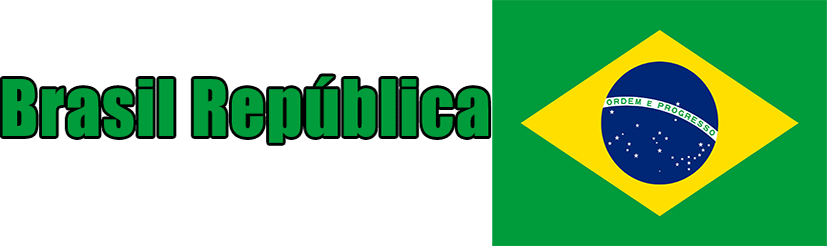
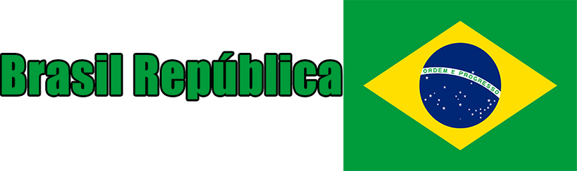

Sem governo
- A chegada dos Colonos em 1500
- As tribos indígenas
- Ilha de Vera Cruz
- Pau Brasil
- Ilha de Vera Cruz Vira Brasil
Brasil com Capitanias
- O Rei de Portugal cria capitanias no Brasil
- Cana de Açúcar vira a principal fonte de Lucro do Brasil
- Escravidão
- Importação e exportação de escravos
- Tráfico de escravos
- Invasão holandesa de 1624 e 1630 e fundaram a colônia Nova Holanda
- Bandeirantes
- Quilombo de Palmares e a resistência a Portugal
- A queda da produção de açúcar e a ascensão da produção do ouro
- Inconfidência Mineira
- Guerras Napoleônicas e a saída da corte real de Portugal
Dom João VI
- O Reino Unido de Portugal
- Dom João VI faz um upgrade no Brasil, cria indústria, o Banco do Brasil e abre os portos brasileiros para comércio com o mundo todo
- Brasil se transforma em um reino, Reino Unido de Portugal
- Revolução Pernambucana
- Revoltas no parlamento Português
- Dom João VI para Portugal
- José Bonifácio manda uma carta para João VI dizendo para o seu filho ficar
- Pedro fica no Brasil
- "Eu fico" de Dom Pedro
- As revoltas Portuguesas permanecem
- 7 de setembro de 1822
- Independência ou Morte
José Bonifácio cria a marinha brasileira para lutar contra os portugueses revoltosos
Explicação da Bandeira do Brasil